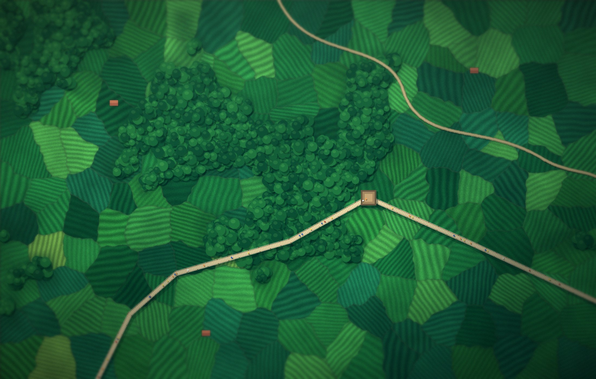

Esqueceu sua senha?
Informe o e-mail da sua conta e enviaremos um link para criar uma nova senha.
Verifique seu e-mail
Se estiver cadastrado, você receberá um link para redefinir a senha em instantes. Confira também a caixa de spam.

Informe o e-mail da sua conta e enviaremos um link para criar uma nova senha.
Se estiver cadastrado, você receberá um link para redefinir a senha em instantes. Confira também a caixa de spam.